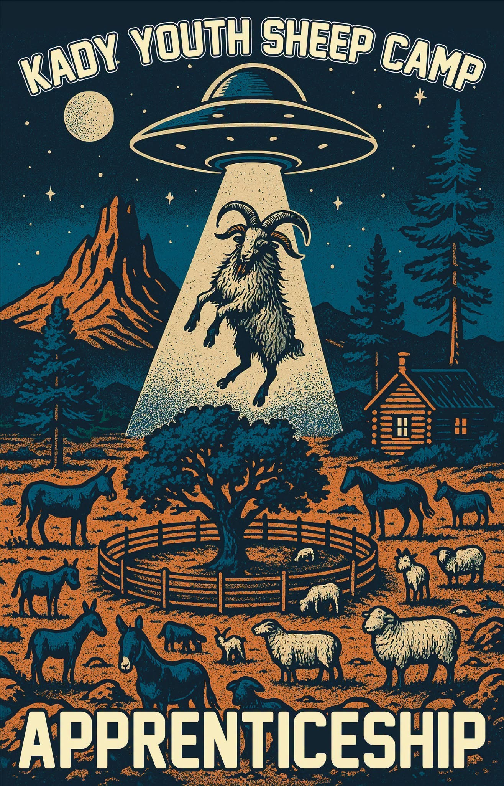
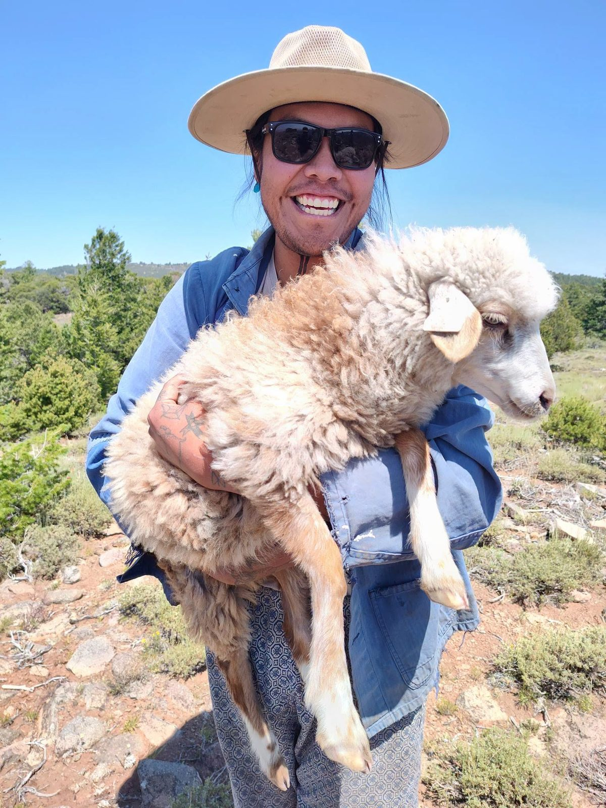

Kady Youth Sheep Camp
Teec Nos Pos · Navajo Nation · 36.9°N 109.1°W

Keeping Diné lifeways alive through the raising of sheep and goats, the land, and the loom.
● Full site landing soon

The apprenticeship
Returning to remember who we are.
The Kady Youth Sheep Camp Apprenticeship carries the heartbeat of our ancestors — a path of returning to the lifeways of sheep and goats, our gentle teachers of patience, balance, and care.
Through the work of our hands and hearts — herding, tending the land, gathering herbs, shaping clay, and weaving fiber — the young learn the old songs again, and keep the fire of our Diné lifeways alive.
— Roy Kady, Kady Youth Sheep Camp
Hozhó · beauty & balance
Ké · sacred kinship